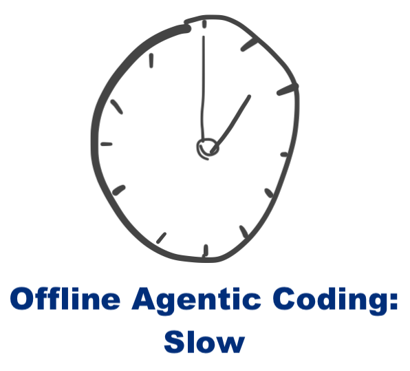
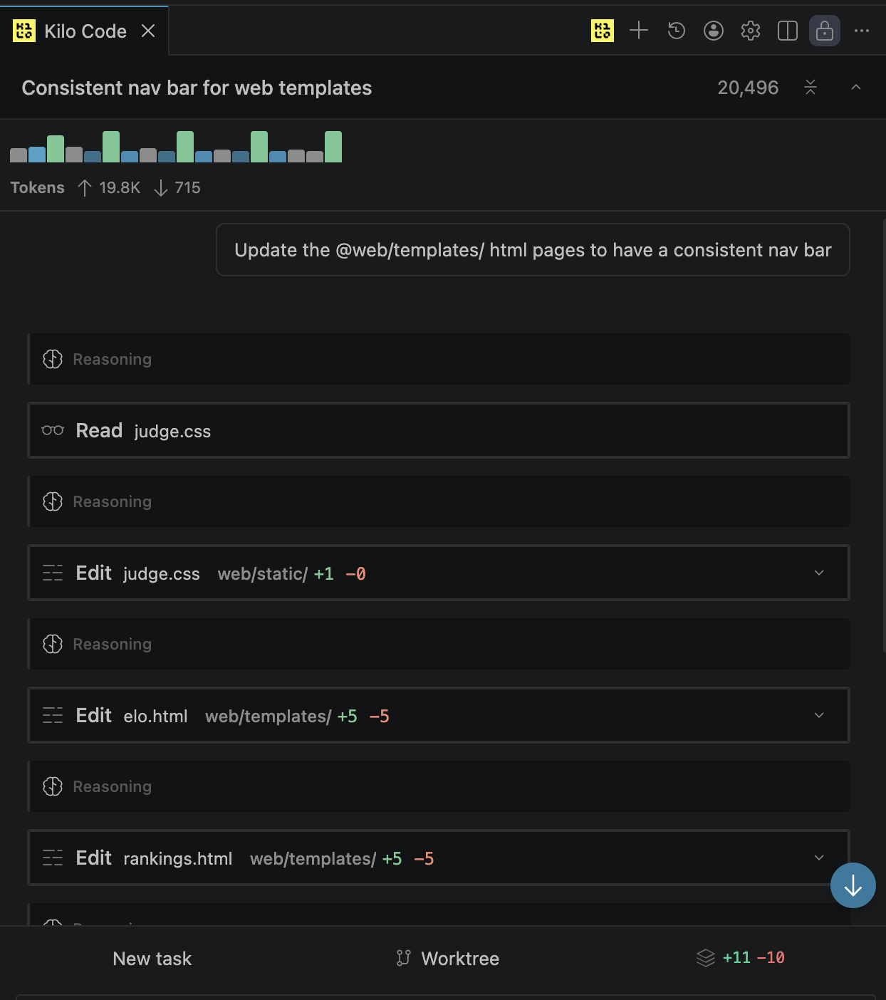

Offline Agentic Coding part 2: OpenCode & Kilocode.
Published 2026-05-07

OpenCode:
Claude code with non-anthropic models feels limited. Conveniently, we can also use OpenCode!
ollama launch opencodeOpenCode is like Claude Code but bring your own model. Overall it's very comparable, but is less polished in some ways while feeling more solid in others.
Kilocode:
Kilocode (kilo.ai) is an agentic coding platform. It's now primarily powered by a fork of OpenCode. Their VScode/codium extension is very nice, and offers one of the my favorite views of the context window:

Hooking up a local model to the Kilocode vscode extension is straightforwad. Just give it your local server port and you're good to go.
Kilocode is also nice because they have support for a wide range of model providers as well as their own model provider platform, so it's seemless to switch between local, open, and proprietary models.
Overall
Overall local models for coding are still too slow to be practical on regular hardware, but it's nice to have as a capability if the internet goes down, and it's still magical to be able to tell me computer to program itself.